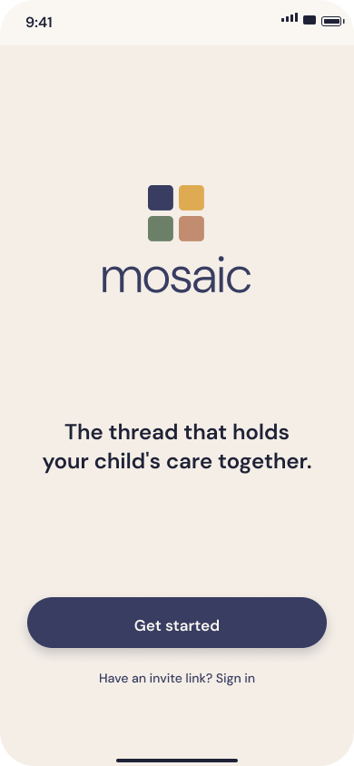
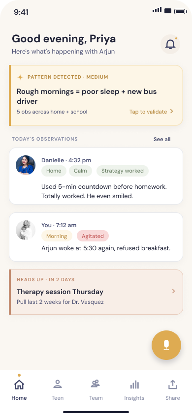
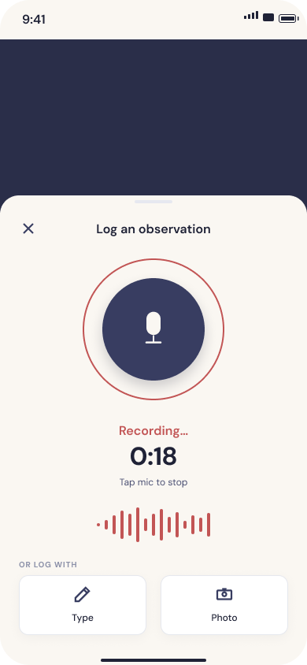
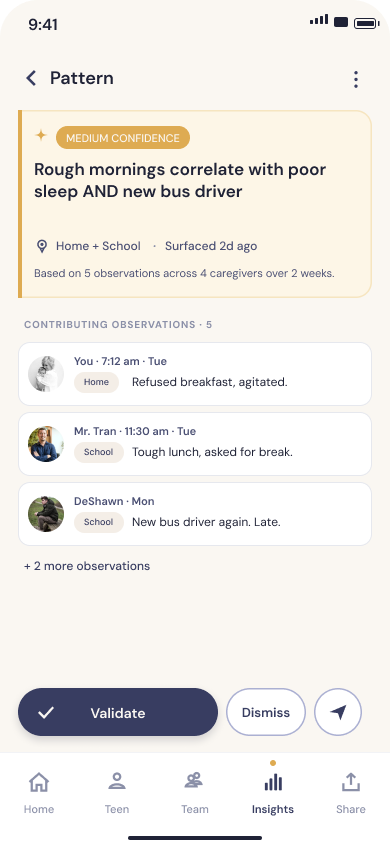
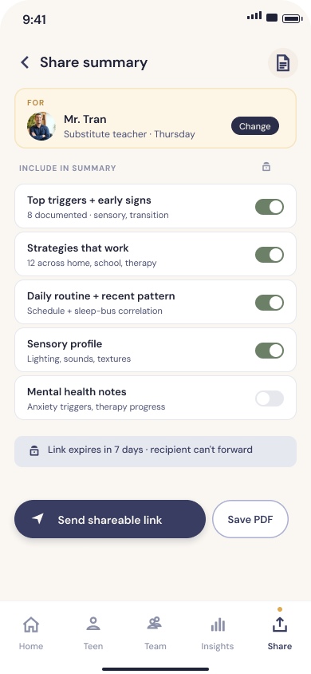
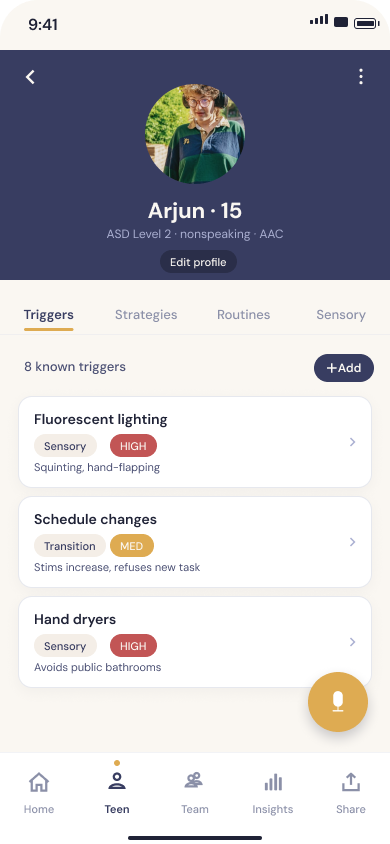
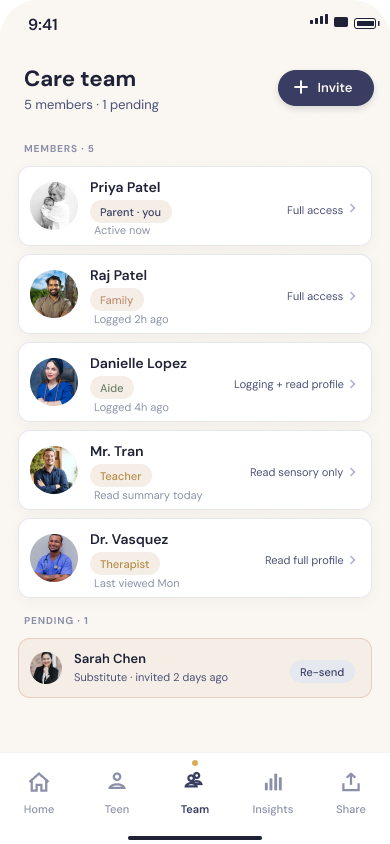
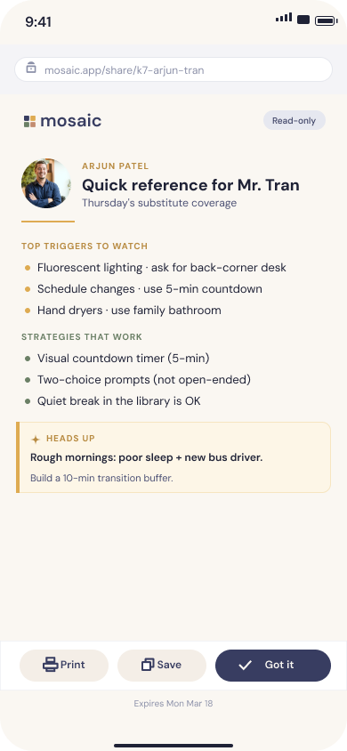
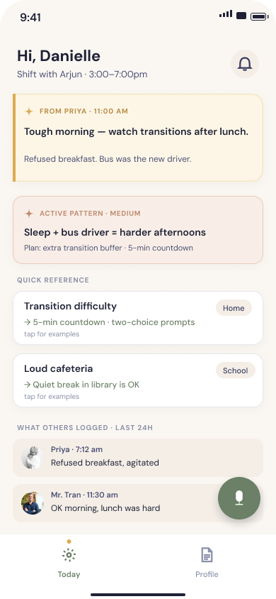
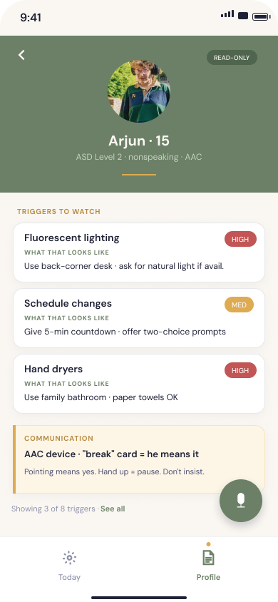

Mosaic is a behavioral memory app for parents and aides supporting teens with autism. Voice notes from every caregiver build a shared, living record, so the next person who steps in already knows what works.
Role
Product Manager · Designer
Team
Solo
Timeframe
May – Jun 2026
Context
The operating manual lived in one person's nervous system.
I started this because of a Sunday night I watched my aunt live through. Her son, my cousin, is on the spectrum and minimally verbal. A new in-home aide was starting Monday, and my aunt was writing an operating manual, by hand, for someone who'd have access for a few months. She'd done this before. She'd do it again. Every rotation, from scratch.
Meanwhile the paraprofessional at school kept her own notes. The ABA therapist kept his. A substitute teacher would walk in cold. Each person knew something true about my cousin. Nobody saw the whole picture. My aunt was the translator between five incompatible systems, and she carried the cost of that in her nervous system.
1 in 36Children with autism (CDC, 2023)
4×Prevalence growth since 2000
~1 yrMedian tenure for a home aide
The parent, at the center, as translator
Research
Where the friction actually lived.
Three phases. Secondary landscape scan to name the pattern. Synthetic interviews to sharpen the guide. Primary interviews with real caregivers to validate or break every hypothesis.
01
Secondary research
CDC autism prevalence data. Caregiver burnout literature. Full competitive audit of every tool autism parent communities have tried and abandoned, Cozi, Goally, CentralReach, group texts, Notion.
02
Synthetic interviews
Three constructed participant profiles to stress-test hypotheses and refine the discussion guide before fieldwork. Cheaper to break my assumptions in a room by myself than with real caregivers.
03
Primary interviews
Ten real caregivers across parents, in-home aides, and support-worker roles. Validated discussion guides. Enough range to break or validate every primary hypothesis with nuance across roles.
Three personas that emerged
Not demographic segments, behavioral archetypes based on how each person relates to the caregiving system. v1 targets Priya and Danielle. Marcus Webb is v3.
Primary caregiver
Priya
Mom of Arjun (15, non-verbal autism)
Tech relationshipEarly adopter. Actively searching for a better solution than the five apps she cobbled together.
I carry around the entire operating manual for my kid in my nervous system.
Design implication
Rich documentation environment. Granular per-recipient permissions. Succession-readiness as the ultimate test of value.
In-home aide
Danielle
6 years in home care, no autism-specific cert
Tech relationshipVoice memos, phone apps. Won't touch anything that takes more than 30 seconds to contribute to.
I notice patterns. I see things. But I don't always know how to share them, or if I should.
Design implication
30-second contribution barrier is sacred. Read-only Behavioral Profile with concrete examples. Suggest-upward workflow with psychological safety.
Survival strategist
Marcus Webb
Resource-constrained. Institution-routed.
Tech relationshipLow-tech workarounds. Paper binders and verbal handoffs. Adopts on institutional endorsement, not marketing.
If the school said we're all gonna use this app, or if the therapist said this is what we recommend, then I'd be more comfortable.
Design implication
Deferred to v3. Requires institutional GTM (partnerships + robust free tier) before this segment is reachable.
Three insights that broke the frame
Insight 01 · Contribution
The 30-second barrier is non-negotiable.
If it takes more than 30 seconds, I'm not doing it.
Keisha Williams · in-home aide
Aides won't engage with any tool that exceeds a 30-second contribution ceiling at the end of a shift. Voice, not typing. AI does the structuring after capture. Exceed the cap and the whole network effect collapses.
Insight 02 · Motivation
The deepest driver isn't efficiency. It's mortality fear.
If I'm not there, it's gone.
Marcus Chen · primary caregiver
Parents didn't ask for productivity. They asked for portability. The real product job isn't saving 30 minutes a day, it's making the parent's knowledge transferable in case something happens to them. That reframed Mosaic from coordination tool to succession-planning tool.
Insight 03 · Power dynamics
Power asymmetry silences the observations that matter most.
I notice patterns. I see things. But I don't always know how to share them, or if I should.
Keisha Williams · in-home aide
Aides notice patterns nobody else can. They're the only person there during certain hours, in certain environments. But they don't share what they see, fearing they'll be read as critical or unprepared. Any tool that ignores this fails at the multi-caregiver layer.
Solution
Voice notes today. A living operating manual over time.
Open the app. Tap the voice button. Talk for fifteen seconds: "Arjun woke at 5:30 again, refused breakfast, third Tuesday in a row." That's it. AI transcribes, infers environment and mood, and lands the observation in a timeline visible to every caregiver on the team. Over time, the timeline gets pattern-rich enough that the AI surfaces cross-environment correlations neither the parent nor the aide could have spotted alone.
Six principles that shaped every decision
01
The 30-second barrier is sacred
Voice over typing. Tap over decision. Inference over input. Exceed 30 seconds and the aide stops logging.
02
Cross-environment by design
No single-user mode. If it doesn't span at least two caregivers, it doesn't ship.
03
Power asymmetry, designed away
Aides log without attribution where useful. Suggestions go upward, never surveillance.
04
AI explains, never prescribes
"We noticed" with confidence indicators. Never "you should." The parent stays in authority.
05
Knowledge is portable
The test of value is succession-readiness. If a new caregiver can't start Monday, the tool failed.
06
Warmth over clinical
Dignified interface, never sterile. This is a family tool, not a therapist's chart.
The core loop
Log → Share → Learn → Act. Every observation feeds the next handoff, and every handoff makes the next observation more useful.
Where Mosaic sits
Clinical ABA tools sit upper-left. General family apps sit lower-right. The upper-right corner, high behavioral intelligence + high family-friendliness, was empty. That's the seat Mosaic is built for.
Information architecture · same data, two interfaces
The Behavioral Profile is a single shared entity. What differs is what each role can DO with it. Parents get five tabs of depth. Aides get two tabs of read-mostly minimalism plus one persistent voice button. Toggle to compare.
Home · the personalized hub
Active quest surface, center of screen
Shared timeline of every caregiver's observations
Skill radar in the right rail
Trending discussions + upcoming events
Teen · the living operating manual
Behavioral Profile with full edit authority
Triggers · strategies · routines
"What that looks like" concrete examples
Version history + change log
Team · roster + permissions
Invite by role (Aide, Substitute, Therapist, Family)
Per-recipient permission defaults
Member detail view + audit log
Immediate revocation on removal
Insights · find + filter
Keyword search across all observations
Filter by date, caregiver, environment, tag
Observation detail view with audio playback
v2 lands here: AI cross-environment pattern detection
"What that looks like" concrete examples under each
Suggest-upward workflow, never edit-in-place
Emergency contacts one-tap reachable
Brand + visual language
Mosaic's visual language is built around warmth, calm, and care, in deliberate contrast to the clinical aesthetic of ABA tools. Soft tones, breathing layouts, and conversational type signal that this is a tool built for families, not for therapists.
Mosaic moodboard · visual language and brand direction
Product
In use.
Twenty-seven features in v1, prioritized around one job: make the next caregiver's first day easier than the last one's last day.
The shipped experience
Hover a tab to swap the screen. Each screen carries one job in the dual-interface architecture.










First screen after invite. 30-second intro, no password, no setup. Lands directly on Today or Home based on role.
Parent lands here. Shared timeline from every caregiver, environment chips per observation, next handoff surface one tap away.
Persistent FAB. Tap, talk, done. AI handles transcription, auto-tagging, and environment inference after capture.
Deep-dive into one observation. Environment, author, mood, transcript, and connections to related patterns. This is where v2's AI cross-environment surfacing will land.
Auto-assembled handoff document, scoped per recipient. Toggle privacy per block. Send as a shareable link, no install required.
The living operating manual. Parents edit triggers, strategies, and routines. Aides read the same content with concrete "what that looks like" examples.
Care team roster. Invite by role with default permissions. Every recipient view event lives in the audit log.
Mobile-web recipient view. Substitute teacher opens the link in Safari, reads for 90 seconds. No app to download, no account to create.
Aide-only start-of-shift surface. Shift card, last 24 hours of team observations, and three quick-reference triggers pinned up top.
Read-only Behavioral Profile. Same content the parent maintains, presented with "what that looks like" examples for context.
Three journeys, end to end
The product in the moments that matter. Click a scenario to see the journey unfold.
Parent Aide Therapist Mosaic / AI
W1 onboarding · Friday to Monday
Fri · 8 PM
P
Invite Danielle
Team → Invite. Sets role, reviews defaults, hits Send.
Sat · 9 AM
A
Magic link, 30-sec intro
Lands on Today. No password, no setup.
Sun · 3 PM
A
Reads Behavioral Profile
"What that looks like" under each trigger. Feels prepared.
Mon · 2 PM
M
Pre-shift heads-up
Push notification with parent's note + 3 quick-refs.
Mon · 7:15 PM
A
Voice log, 25 sec
AI transcribes, auto-tags, notifies Priya. 28-sec total.
Outcome A new caregiver started ready, not information-starved. First shift ends with a shared record.
W3 clinical handoff · parent to therapist
Wed · 8 PM
P
Opens Share
Picks Therapist. Dr. Vasquez's contact auto-populates.
Wed · 8:05 PM
P
Reviews preview
Top triggers, strategies working/not, recent context.
Wed · 8:10 PM
P
Sets privacy toggles
Leaves defaults. Therapist gets the full picture, MH included.
Wed · 8:15 PM
M
Assembles + sends link
Per-recipient URL with audit token embedded.
Thu · 9 AM
T
Opens in Safari
No install. 90-sec read. Audit log records the open event.
Thu · 9:05 AM
T
Session begins
"I saw the new bus-driver thing. Let's talk transitions."
Outcome Therapist walks in already caught up. Session time goes to insight, not context-setting.
W2 daily observation · the 30-second test
Sun · 8 PM
M
Pre-shift push
Tomorrow's shift + Priya's heads-up. Danielle reads in bed.
"5-minute countdown" flagged for Priya's morning review.
Outcome Shift start to shift end: 28 seconds of app time. Zero interruptions. One useful observation captured.
The bet
The bet, and the math behind it.
Mosaic is pre-build, concept stage. The design is done. The build is scoped. Twelve-week v1 build in Sep-Nov 2026, closed beta Jan-Feb 2027, public launch March 2027. The beta is structured as a gate, not a soft launch, testing knowledge transfer and the 30-second barrier before public launch is unlocked.
North star metric
Weekly active families with 2 or more logging caregivers.
60%by Month 3
75%by Month 6
<50%sustained = broken
Unit economics that only work at scale
7.5×LTV : CAC (early adopter)
4-5 moPayback period
<2%Monthly churn target
$10 / moPremium ($8 annual)
At 1× scale (1,500 families) the model burns roughly $100 per family per year. At 10× it breaks even. At 100× it's a 75% gross margin business. Getting there depends on aide adoption at 60%+ by Month 3, which is exactly what the beta is designed to prove.
Four-phase GTM
01
Pre-launch trust
Jun-Dec 2026 · $5K
Founder in parent communities. Content marketing. No product yet, just presence.
02
Closed beta
Jan-Feb 2027 · $3K
Eight to twelve families. Founder-led onboarding. Weekly 1:1s. This is where H1 and H4 gate.
03
Public launch
Mar-Jun 2027 · $30K
Referral program. Small paid test. Goal: 250 paying families in 90 days, 1,500 by Month 4.
04
Institutional pivot
Q3 2027+ · $40K
First pediatric ABA clinic pilots. Reaches the Survival Strategist segment via institutional endorsement.
Five hypotheses, gated with pass signals
H1
Knowledge transfer works
70%+ of aides can name the top 3 triggers without calling the parent.
H2
Patterns earn trust
60%+ pattern validation rate at 60 days (v2).
H3
Burnout reduces
NPS ≥ 40 + 25%+ self-reported burnout reduction.
H4
The 30-second cap holds
Median contribution ≤ 30 sec. Higher cohorts show ≥ 30% lower log rate.
H5
WTP converts
25-30% free-to-paid at paywall trigger (3rd caregiver invite).
Reflection
Three things this taught me.
01
The reframe is the work.
I went in expecting to design a documentation tool. Two interviews in, the problem became architecture. Product decisions get easier when the frame is right, and no amount of UI polish can rescue a wrong frame.
Problem framing02
Cut features to protect the barrier.
AI pattern detection was almost in v1. I cut it. False positives without observation density would kill trust faster than any feature gap. Sometimes the most important product decision is what it doesn't do yet.
Prioritization03
Design around the person least willing to use it.
The parent will use anything. The aide will use nothing that costs more than 30 seconds. So the whole product got designed around the aide's constraints, and the parent got the depth as a byproduct.
Constraint-first design
Open questions I'm sitting with
Is AI pattern detection actually accurate enough at low data volumes to surface useful patterns in the first ninety days? Without that early "we noticed" moment, the habit doesn't form. Without the habit, the network effects don't kick in.
Does the dual-interface design actually change aide engagement in real homes? That's the bet the whole product rests on.
Will institutional endorsement (therapist or school recommending the tool) materialize organically through the early-adopter cohort, or does it need to be engineered?
"I notice patterns. I see things. But I don't always know how to share them, or if I should."
Keisha Williams · in-home aide
The product I want to build is the one that earns the right to hear that observation, every shift, from every aide.